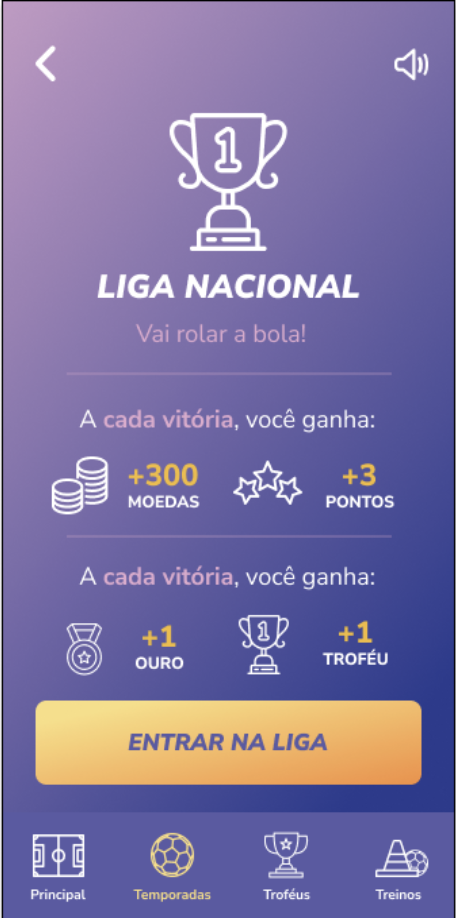

Estudo de Caso: Revolucionando a Alfabetização com o Aplicativo Base
UX Design & Product Management para uma solução educacional gamificada e inclusiva.
Visão Geral do Projeto
O aplicativo Base foi concebido como um recurso educacional para auxiliar crianças nos anos iniciais de alfabetização com a linguagem do esporte. O projeto teve duração de setembro de 2021 a março de 2022.
O Problema
Percebendo as limitações técnicas e financeiras das escolas públicas para inovarem em seu fazer e as dificuldades enfrentadas por muitas famílias de baixa renda em atuarem como tutores das crianças em idade escolar (por falta de tempo ou qualificação), o Instituto Vini.Jr buscou atuar nessas lacunas, contribuindo diretamente com a melhoria da educação básica no Brasil.
Meu Papel
Pesquisa inicial e entendimento do problema
Entrevistas, personas e mapas de jornada
Wireframes e protótipos de alta fidelidade
Validação com 128 alunos e 7 professores
- Definição da visão do produto
- Criação do roadmap
- Priorização de sprints
- Alinhamento com objetivos de negócio
- Coordenação de designer gráfico
- Orientação de ilustrador
- Gestão de redator
- Trabalho com pedagogos e professores
- 12 entrevistas com usuários
- Criação de mapas de empatia
- Desenvolvimento de personas
- Tradução de insights em requisitos
- Arquitetura de interação
- Wireframes digitais
- Supervisão de protótipos
- Garantia de experiência intuitiva
- Validação de conteúdo
- Definição de formatos de atividades
- Ajuste de níveis de dificuldade
- Sequenciamento de aprendizado
- Planejamento de testes de usabilidade
- Análise de padrões de uso
- Extração de insights acionáveis
- Criação de histórias de usuário
Pesquisa e Entendimento do Usuário
Para construir uma solução verdadeiramente eficaz, aprofundamos o entendimento de nossos usuários primários: as crianças em fase de alfabetização e seus professores.
Metodologia
Definição dos objetivos da pesquisa e critérios de seleção dos participantes
Seleção de 12 crianças (1º ao 5º ano) e educadores de São Gonçalo/RJ
Condução de entrevistas estruturadas com alunos acompanhados por responsáveis
Processamento dos dados e identificação de padrões e insights
Período: 15 de agosto a 15 de setembro de 2020
Participantes: 12 crianças, professores, orientadora pedagógica e professor de educação física
Local: Escolas públicas de São Gonçalo/RJ
Mapas de Empatia
Com base nas entrevistas, criamos mapas de empatia para visualizar e compreender profundamente o que nossos usuários pensam, sentem, dizem e fazem. Isso foi crucial para alinhar a equipe e direcionar as soluções.
Personas
Desenvolvemos personas detalhadas para representar os diferentes segmentos de nossos usuários, ajudando a humanizar os dados e a guiar as decisões de design e produto.
Declarações de Problema
Com base nos insights das personas e mapas de dor, formulamos declarações de problema claras para os alunos e professores, servindo como a base para as soluções a serem desenvolvidas.
- **Alunos (Gabi e Caio):** Gabi, estudante em fase de alfabetização, precisa de ajuda no reconhecimento de letras, símbolos e números para melhorar seu desempenho escolar. Caio, apesar de reconhecer elementos básicos, precisa de ajuda nos conteúdos da BNCC oferecidos pela escola para melhorar seu desempenho.
- **Professoras (Silvia e Iara):** Silvia, com dificuldade na alfabetização dos alunos, precisa de um recurso para testar e checar o desempenho individual. Iara, com alunos em diferentes fases, precisa de um recurso que os ajude a se aproximar do conhecimento de letras, números e símbolos para o próximo ciclo escolar.
Mapas de Dor
Detalhando ainda mais os desafios, os mapas de dor nos permitiram identificar os pontos críticos de frustração dos usuários, desde dificuldades técnicas até questões pedagógicas e sociais.
Mapas de Jornada do Usuário
Mapeamos a jornada completa de alunos e professores, desde o primeiro contato com o aplicativo até a interação diária. Isso nos permitiu identificar oportunidades de melhoria em cada etapa.
Design e Prototipagem
Com base nos insights da pesquisa, liderei a fase de design, traduzindo as necessidades dos usuários em uma experiência intuitiva e visualmente atraente. Embora houvesse um designer gráfico e um ilustrador na equipe, a arquitetura de interação e a direção de design foram definidas sob minha orientação.
Wireframes Digitais
Começamos com wireframes digitais para estabelecer a estrutura e o fluxo das telas, focando na usabilidade e na funcionalidade.

Protótipo em Alta Fidelidade
A partir dos wireframes, o protótipo de alta fidelidade foi desenvolvido, incorporando a identidade visual e os elementos interativos, tornando a experiência quase real antes do desenvolvimento.
Acesse o protótipo interativo aqui: Ver Protótipo Interativo
Estratégia de Acessibilidade Inclusiva
Desenvolvi uma abordagem de acessibilidade que vai além das diretrizes técnicas, considerando as realidades socioeconômicas e limitações técnicas do contexto educacional público brasileiro.
SoundSystem Adaptativo
Design para Dispositivos Compartilhados
Conectividade Limitada
Contraste e Legibilidade
Interações Intuitivas
Performance Otimizada
Adaptações Específicas para o Contexto
- Instruções principalmente visuais e sonoras
- Progressão adaptativa baseada na competência
- Suporte para diferentes ritmos de aprendizado
- Feedback não-verbal para reduzir ansiedade
- Interface que responsáveis podem usar sem instrução
- Proteção contra alterações acidentais
- Múltiplos perfis no mesmo dispositivo
- Progresso visível para motivar família
- Uso coletivo em salas com ruído
- Configuração rápida para professores
- Funciona sem Wi-Fi estável
- Baixo consumo de bateria

Validação Contínua e Refinamentos
Durante o desenvolvimento, implementamos um processo rigoroso de validação e iteração, documentando cada ajuste baseado em feedback dos usuários e descobertas técnicas. Este processo colaborativo garantiu que o produto final atendesse às necessidades reais dos usuários.
Identificação de problemas na experiência do usuário através de testes iniciais com protótipo funcional.
- Erro de cadastro de professores impedindo acesso
- Problemas de navegação entre telas do jogo
- Interface confusa para seleção de ligas
- Feedback inadequado após conclusão de atividades
Refinamentos baseados nos insights dos testes com professores e alunos, focando na usabilidade e clareza das informações.
- Redesign da tela de cadastro de professores
- Simplificação do fluxo de seleção de jogadores
- Melhoria na hierarquia visual das ligas
- Implementação de feedback sonoro para ações
- Otimização da tela de progresso do aluno
Ajustes finais baseados em testes de aceitação com usuários reais, garantindo que todas as funcionalidades estivessem otimizadas.
- Ajustes na mecânica de troféus e recompensas
- Melhorias na responsividade para diferentes dispositivos
- Otimização de performance para conectividade limitada
- Validação final do conteúdo pedagógico
- Documentação completa para educadores
Estratégia de Produto e Roadmap
Como Product Manager/Owner, estruturei o desenvolvimento através de sprints organizadas, balanceando necessidades técnicas com impacto no usuário. O backlog foi priorizado considerando dependências técnicas, recursos da equipe e valor para os usuários finais.
Sprint 1 - Fundação e Core Features
- Sistema de autenticação de usuários Alta
- Interface de seleção de jogadores Alta
- Tela principal de ligas e competições Alta
- Componente de atividades interativas Média
- Sistema de feedback visual Média
- API de gerenciamento de usuários Alta
- Sistema de pontuação e progresso Alta
- Base de dados de atividades BNCC Alta
- Sincronização offline básica Média
- Finalização da identidade visual Alta
- Ilustrações para atividades principais Alta
- Personagem Vini Jr. 3D - conceito Média
- Animações de feedback básicas Baixa
- Curadoria de 50 atividades iniciais Alta
- Validação pedagógica com especialistas Alta
- Sistema de progressão de dificuldade Média
- Material de apoio para professores Baixa
Critérios de Priorização
- Facilita o processo de alfabetização
- Reduz barreiras de acesso tecnológico
- Melhora engajamento dos alunos
- Suporte efetivo aos professores
- Compatibilidade com dispositivos limitados
- Funcionamento offline
- Baixo consumo de dados
- Performance em redes instáveis
- Alinhamento com missão educacional
- Escalabilidade para outras regiões
- Sustentabilidade do projeto
- Parcerias com sistema público
Testes de Usabilidade e Insights
A fase de testes de usabilidade foi crucial para validar nossas hipóteses e identificar pontos de melhoria, permitindo que o produto fosse refinado com base em dados reais de uso.
Metodologia de Testes
Foram realizados testes individuais e em turma com 53 alunos no Teste Individual e 75 alunos no Teste em Turma, totalizando 128 alunos alcançados. Também foram conduzidos testes com 7 professores, com etapas de pré-teste (para entender o cenário da turma) e pós-teste (para coletar NPS e SUS).
Descobertas: Padrões de Uso e Insights
Através da análise de afinidade, identificamos padrões de uso e geramos insights acionáveis, essenciais para as próximas iterações. Os resultados foram divididos por categorias como Usabilidade, Gamificação, Pedagógico, Acessibilidade e Segurança para alunos, e Acesso, Cadastrado, Segurança, Turmas, Usabilidade, Gamificação, Acessibilidade e Pedagógico para professores.
Navegação e Acesso
Comportamento de Jogo
Descobrimento de Funcionalidades
Resultados - Professoras
Onboarding e Cadastro
Gestão de Turmas
Perfil e Configurações
Padrões de Uso em Turmas (Observações Comuns)
- Todos os professores auxiliaram alunos durante as atividades.
- Todos os professores precisaram de ajuda técnica.
- 4 de 5 professores fizeram introdução do aplicativo à turma.
- Apenas 1 de 5 professores preparou aula específica para o Base ou usou outro dispositivo durante a aula.
- Nenhum professor utilizou ou indicou o livro didático físico para uso em casa.
Resultados SUS e NPS
Após os testes, coletamos o System Usability Scale (SUS) e o Net Promoter Score (NPS) para quantificar a aceitação e usabilidade do aplicativo.
Os resultados mostraram uma alta aceitação e usabilidade, indicando que o aplicativo foi bem recebido pelos usuários.
Estratégia de Gamificação
Desenvolvi uma estratégia de gamificação centrada na motivação intrínseca da criança, utilizando elementos do universo esportivo para criar conexão emocional. O design psicológico por trás de cada elemento foi cuidadosamente pensado para sustentar o engajamento a longo prazo.
Sistema de Ligas e Competições
- Progressão natural de dificuldade
- Sensação de conquista gradual
- Competição saudável entre pares
- Reconhecimento de pequenos progressos
- Conexão com universo esportivo familiar
Personagem Vini Jr. 3D
- Feedback emocional personalizado
- Conexão com ídolo esportivo conhecido
- Reforço positivo através de representação
- Motivação através de identificação
- Redução da ansiedade de performance
Feedback Diferenciado por Performance
- 100% de acerto: "Parabéns!" (celebração)
- 70-99%: "Muito Bem!" (encorajamento)
- <70%: "Boa Tentativa!" (apoio)
- Sistema não-punitivo
- Foco no progresso, não na perfeição
SoundSystem Inclusivo
- Acessibilidade para diferentes níveis de leitura
- Reforço auditivo das conquistas
- Configurações adaptáveis aos ambientes
- Suporte a crianças com dificuldades visuais
- Criação de atmosfera lúdica
Sistema de Troféus e Medalhas
- Reconhecimento de diferentes tipos de progresso
- Coleção como motivador de longo prazo
- Compartilhamento de conquistas com professores
- Validação de esforço, não apenas resultado
- Construção de autoestima através de conquistas
Mecânicas de Treino e Preparação
- Preparação antes de competições principais
- Redução da ansiedade através da prática
- Construção gradual de confiança
- Simulação de ambiente real de aprendizado
- Oportunidade de repetição sem julgamento
Psicologia por Trás das Decisões
- Foco no prazer de aprender, não apenas recompensas
- Autonomia na escolha de atividades
- Sensação de competência através de progressão gradual
- Conexão social através de elementos compartilhados
- Normalização do erro como parte do processo
- Feedback construtivo que incentiva nova tentativa
- Celebração de pequenos progressos diários
- Construção gradual de autoconfiança acadêmica
- Redução da pressão acadêmica através do jogo
- Associação positiva com processo de aprendizado
- Uso de elementos familiares (esporte) como ponte
- Criação de memórias afetivas positivas com educação
Prioridades e Próximos Passos
Com base nos testes de usabilidade, as oportunidades de melhoria foram categorizadas por prioridade, sendo traduzidas em histórias de usuário para guiar o desenvolvimento futuro.
Prioridade Zero - Próxima Sprint
Prioridade Um - Sprint Seguinte
Prioridade Dois - Roadmap Futuro
Aprendizados e Próximos Passos
Este projeto foi uma curva de aprendizado intensa e gratificante. Aprendemos que:
- Professores: Precisam de instrução prévia em informática básica, precisam de acesso aos índices de progresso dos alunos, e demoram a responder contatos online.
- Crianças: Adaptam-se rapidamente ao aplicativo, são mais fáceis de entrevistar através dos professores, e interrompem a liga quando erram.
- Escola: Possui TV LCD 55" com entradas HDMI inoperantes.
- Testes: Gravar telas e áudios é uma boa estratégia, e é importante impedir interrupção da gravação.
Os próximos passos incluem: instruir professores e desenvolver material de apoio, completar Histórias de Usuários de Prioridade 2, e realizar novos testes com alunos, professores e turmas para validar os ajustes. Iniciaremos também a inclusão de gestores escolares para traçar suas personas.
Reflexões e Aprendizados
Este projeto foi transformador tanto profissionalmente quanto pessoalmente. Trabalhar com educação pública me ensinou sobre os desafios reais de design inclusivo e a responsabilidade social que carregamos como designers de produto.